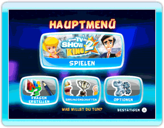
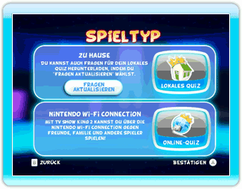
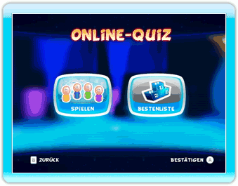
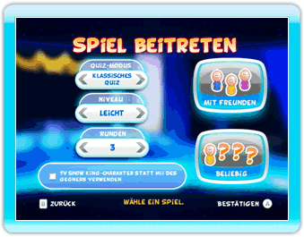
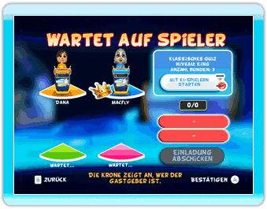

21 |
Nintendo Wi-Fi Connection |
 |
Mit TV Show King 2 kannst du online gegen Freunde, Familie oder andere Spieler spielen!
Wenn deine Verbindung zur Nintendo Wi-Fi Connection hergestellt ist, kannst du ganz einfach ein Online-Quiz spielen.  Wähle im Hauptmenü “Spielen”.  Wähle im Menü Spieltyp “Online-Quiz”.  Im Menü Online-Quiz kannst du dir die Online-Bestenliste ansehen oder gleich anfangen zu spielen. Wähle “Spielen”, wenn du online spielen willst.  Nachdem du dein Mii und ein Pult gewählt hast, musst du noch wählen, welche Art Spiel du spielen willst. Wähle nach Belieben Quiz-Modus, Niveau und Rundenoptionen und wähle dann “Beliebig”, um gegen beliebige Spieler anzutreten. In diesem Menü kannst du außerdem deine Freundesliste bearbeiten, indem du “Mit Freunden” wählst. Mehr Informationen zur Freundesliste und zu möglichen Aktionen, die du von ihr ausgehend ausführen kannst, findest du im folgenden Abschnitt “Online-Freunde”.  Nachdem du “Beliebig” gewählt oder deine Freunde eingeladen hast (siehe folgender Abschnitt “Online-Freunde”), erscheint ein Wartebildschirm. Hier musst du nichts weiter tun, als zu warten, bis alle Plätze voll sind. Du kannst mit KI-Spielern anfangen, wenn du möchtest. Falls du deine Einstellungen ändern möchtest, drückst du einfach den B-Knopf, um zum vorherigen Bildschirm zurückzukehren. Wenn dem Spiel mindestens 2 Spieler (dich inbegriffen) beigetreten sind, hast du die Möglichkeit, das Spiel zu starten, bevor alle Plätze voll sind. In diesem Fall werden die freien Plätze von KI-Spielern eingenommen. Das Spiel mit KI-Spielern beginnt erst, wenn alle beigetretenen Spieler “Mit KI-Spielern starten” gewählt haben. Eine Markierung neben dem Spieler zeigt an, wer die Aktion ausgeführt hat.
Während du deine Einstellungen für ein Online-Quiz wählst, kannst du auch “Mit Freunden” wählen, um einen Freundescode einzugeben oder deine Freundesliste zu bearbeiten. Von diesem Bildschirm aus kannst du: A) EINEN NEUEN FREUNDESCODE EINGEBEN Benutze die Tastatur auf dem Bildschirm, um einen 12-stelligen Freundescode einzugeben. Sobald dein Freund deinen Freundescode auf seiner Wii-Konsole eingegeben hat, seid ihr Freunde. B) DEINEN FREUNDESCODE ANSEHEN Auf dieser Seite kannst du deinen eigenen Freundescode einsehen. Wenn du jemanden in deine Freundesliste aufnehmen willst, musst du ihm diesen Code mitteilen. C) MIT FREUNDEN INTERAGIEREN Rechts auf dem Bildschirm ist die Liste aller deiner Freunde zu sehen. Das ist deine Freundesliste. Du kannst den Status deiner Freunde an der Farbe ihrer Tags ablesen (Offline, Online, Nicht verfügbar, Wartet auf belieb. Spieler, Wartet auf Freunde, Zum Einladen gew.). Unabhängig davon, welchen Status dein Freund hat, kannst du das Symbol wählen und ihn aus deiner Freundesliste entfernen. Wenn der Status deines Freundes zeigt, dass er auf ein Spiel wartet (mit beliebigen Spielern oder mit Freunden), kannst du das Symbol wählen, um dem Spiel beizutreten. In diesem Fall wirst du nicht aufgefordert, deine Spieleinstellungen zu wählen und trittst dem Spiel deines Freundes bei. Und schließlich kannst du, wenn dein Freund online ist, das Feld mit seinem Namen wählen, um ihn zu deinem Spiel einzuladen. Vergiss nicht, dass du alle Freunde, die du einladen willst und dann das Feld “Einladung abschicken” wählen musst, um sie einzuladen. Dann wirst du automatisch zum Wartebildschirm weitergeleitet. |
 |
 |
 |